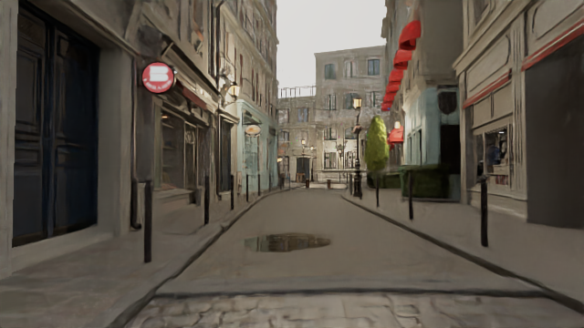
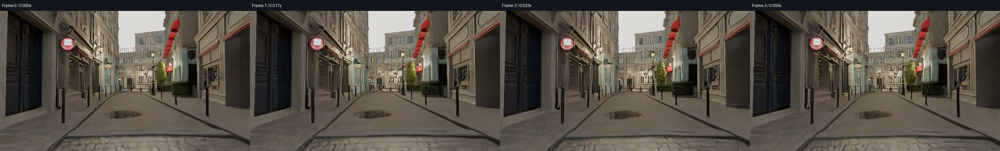
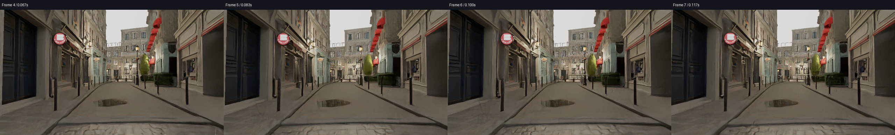
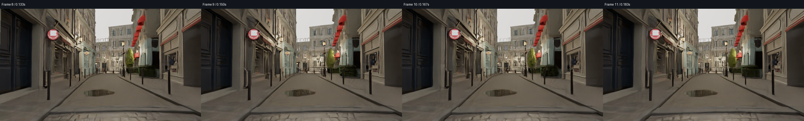
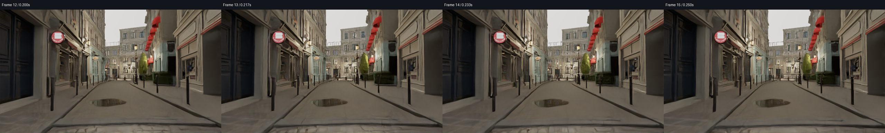
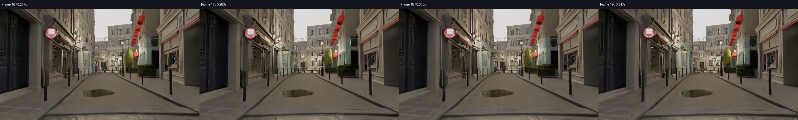
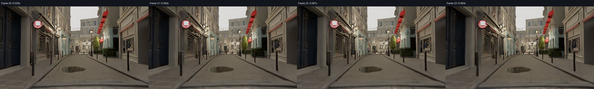

24个连续捕获帧，dt=1/60秒，总跨度0.383秒；原镜头dolly总位移0.821429米，雨云水沿既有动画前进。播放使用真实PNG，没有插帧或上采样。12fps为检查慢放；60fps是原模拟时间播放，不表示实际渲染达到60fps。
本页复用完成的GPU捕获，在CPU上做OIDN后的直接几何重投影，最多结合当前及前2帧背景，权重1 / 0.6 / 0.4；不递归，不累积透明、水或雨。此离线处理阶段没有新增GPU帧，不是实时实现。查看无历史控制 / 有限历史及权重对照。
0
本次实际性能与范围 · 完整逐帧导出、引导权重与回退对照 · 运行方法





